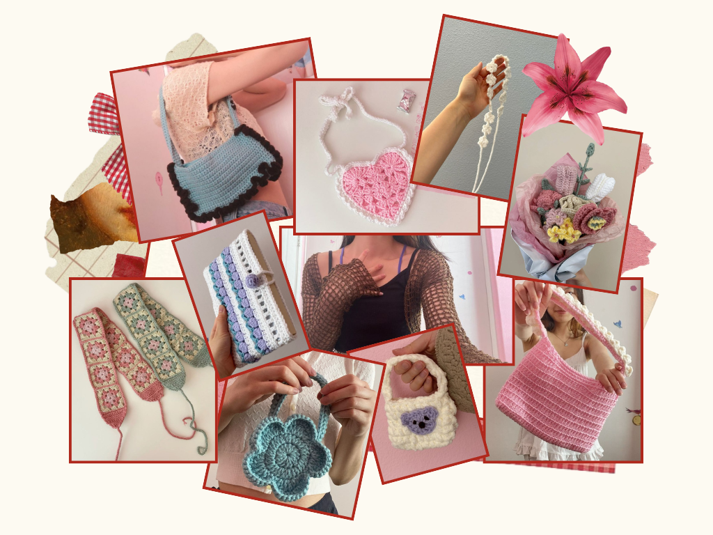
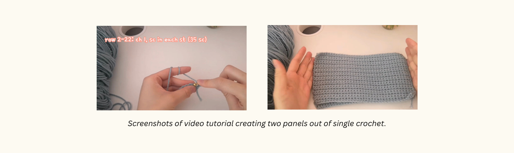
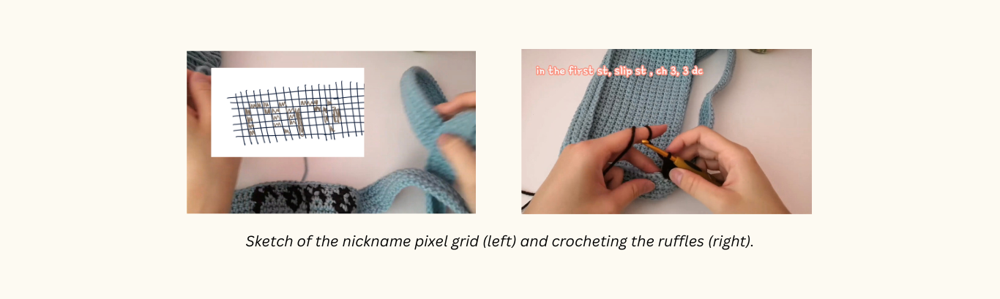
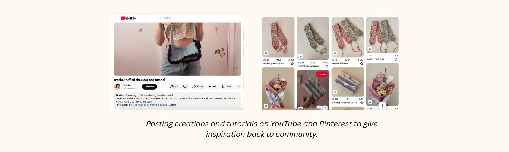

Date: July 10 to July 20, 2021
Role: Crocheter, Designer, Video Editor
View Project Here
I love crocheting gifts for my friends because it allows me to customize it specifically to what they like! I was stumped with what to make for my best friend for her birthday until I remembered that she wanted a new bag. I couldn’t find any crochet patterns of the perfect bag that would fit her taste, so I decided to create my own pattern.
As an avid consumer of crochet content, I have found several problems with patterns and tutorials. I noticed that a lot of tutorials would leave out the written pattern on the video or only have a written pattern on the video without a voiceover, making it harder for people with different learning styles to gain the most out of the video. This can make them feel frustrated and give up on the tutorial or crochet. So, I decided that I would also make a tutorial for this bag.
I actually came up with the design as I was laying in bed. I knew she liked the colors green and brown so the design had to have at least two components to incorporate both colors in some way. I wanted to make a shoulder bag because the y2k aesthetic was trendy at the time, and she mentioned in passing that she liked that era of fashion. I decided to make the entire shoulder bag in green and then add brown ruffles as I remember she used to wear tops with ruffles and this would complement those outfits well. To make the bag even more customized to her, I decided to crochet her nickname on the strap. I sketched a design on Procreate and then broke it down into the smaller parts (two rectangles and a long strap) that would construct the design. The product would finish with a bunch of double crochet stitches to create the ruffles around the bag.
For the video tutorial, I found it important to introduce the project first by showcasing what it looks like so that the viewer understands the product that they are making. Next I included a materials list so that people can gather what they need before starting. With the foundation established, I started the tutorial with the two panels since they were simple single crochet stitches. Since this is a video aimed at beginners, I showed how to make slip knots and how to make a single crochet first. I repeated this a couple of times to make sure that the viewer can understand how to make the stitch, since I could not observe their work in front of me and give them immediate feedback. The timestamps feature on YouTube is particularly helpful because I can divide it into several sections so that more advanced crocheters can move further ahead easily. After the creation of the two panels, I moved on to the strap, which was made with several rows of single crochet that could wrap around the sides of the bag. Assigning each single crochet as a box in a grid, I colored in the letters to spell “roro” (her nickname) and followed my pixel guide to crochet her name into the strap.
Lastly, I finished making the bag by stitching all the pieces together and using double crochets to create ruffles all around the bag. After filming everything, I edited the video on CapCut, added the written pattern on the screen so that people who knew how to read patterns could easily refer to that. I posted pictures of the final product on Pinterest and linked it to my YouTube video. I saw that a lot of people have trouble finding crochet patterns for the Pinterest posts, so I linked it to make that process faster.
The video garnered over 1000 views and many people found it helpful from the comments that they left under my video. It made me so happy to see so many people enjoy my tutorial and make variations that they post on other social media platforms! It is always very fun for me to create something from yarn, it’s like I can make anything that I want from scratch as long as I use some strategy and my crochet hook.
You can find some of my other patterns here